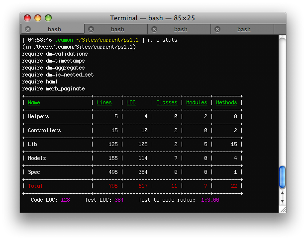

Read moreSerwis klp.pl znają chyba wszyscy uczniowie. Portal nie raz ratował życie mojej klasie (liceum, mat-fiz-inf :p). Posiada jednak jedną wadę - nie można wydrukować na raz całego artykułu tylko trzeba odwiedzić każdą strone po kolei.
Tak było do dzi...
Dzisiaj bez komentarza.

# lib/tasks/stats.rake
desc "LOC statistic"
task :stats do
STATISTICS_DIRS = {
:controllers => 'app/controllers',
:helpers => 'app/helpers',
:models => 'app/models',
:lib => 'lib',
...Ostatnio szukałem jakiegoś dobrego narzędzia do fixtures (nie mam pojęcia jak to można po polsku nazwa) w Merbie i znalazłem projekt na githubie merb-fixtures. Niestety okazało się, że sprawia pewne problemy w szczególności z dm-is-nested_set z paczki...
“Odkryłem” nieciekawe zachowanie metody Array#shuffle. Okazało się, że metoda zachowuje się tak samo przy każdym uruchomieniu ruby.
[03:29:14 teamon ~] irb
>> a = (1..100).to_a
=> [1, 2, 3, 4, 5, 6, 7, 8, 9, 10, 11, 12, 13, 14, 15, 16, 17, 18, 19,...